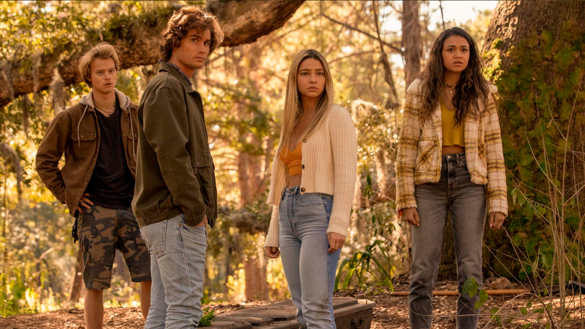
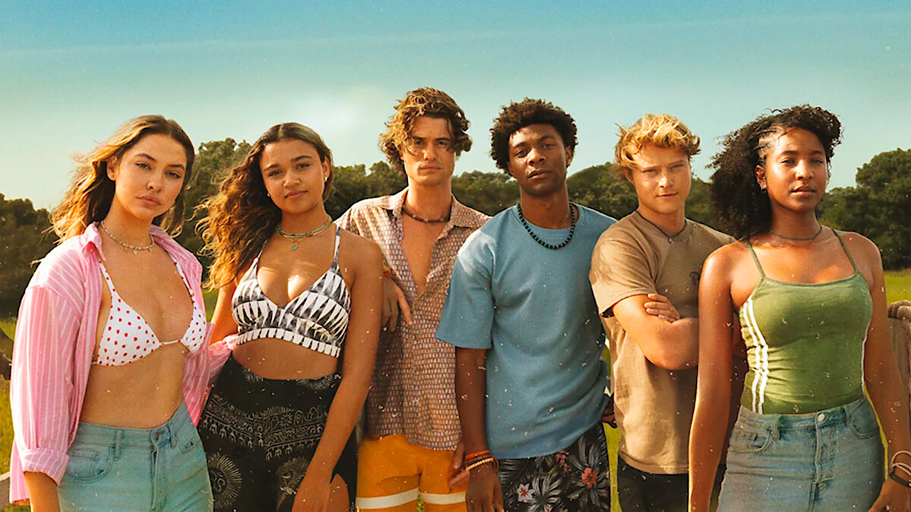

Temporada 1
2020 | 10 episodios
Es el comienzo de la historia. John B y los Pogues intentan descubrir qué ocurrió con el padre de John B mientras comienzan la búsqueda del tesoro del Royal Merchant.
Cada temporada, una nueva aventura. Descubrí cómo evoluciona la historia de los Pogues, con más misterios, peligros y tesoros.
Es el comienzo de la historia. John B y los Pogues intentan descubrir qué ocurrió con el padre de John B mientras comienzan la búsqueda del tesoro del Royal Merchant.

Los Pogues continúan buscando el oro mientras aparecen nuevos enemigos, secretos familiares y situaciones cada vez más peligrosas.
Los Pogues comienzan una nueva aventura que los lleva a buscar El Dorado, una legendaria ciudad de oro. La amistad del grupo vuelve a ponerse a prueba.
Después de sus aventuras anteriores, los Pogues intentan comenzar una nueva etapa, pero terminan involucrados nuevamente en una búsqueda relacionada con el tesoro de Barbanegra.

La quinta temporada continúa la historia de los Pogues y funciona como el cierre de la serie. El grupo debe enfrentarse a sus últimos conflictos y aventuras.